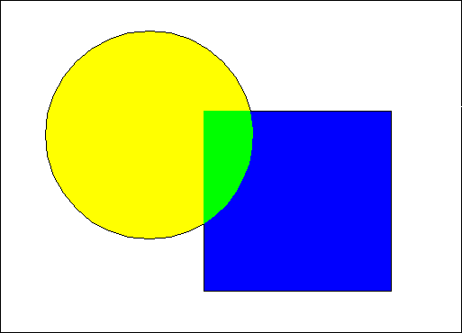

When using FM_OR, the foreground of the new primitive is merged with the existing drawing at the points of overlap. This is effected by ORing the indexes of the overlapping colors to produce a third color. The resulting color is unpredictable if the logical color table has not been realized (using the palette manager). The OR mix attribute is useful for making the common points of two graphics distinct from the points belonging to one of the graphics only, as shown in the following figure.
OR Mix Attribute
The circle is drawn on top of the square. At the points of overlap, indexes are OR'd to produce a new index referencing a new RGB color in the physical color table.
When using the BM_OR attribute, the background of the primitive is merged with the existing drawing according to the same rules that apply to the FM_OR attribute.